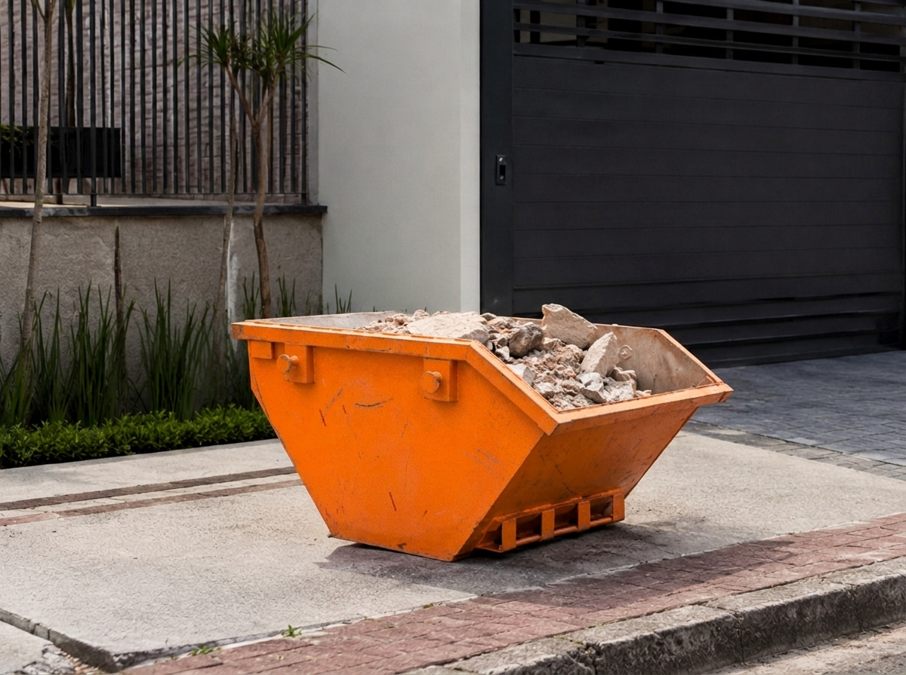
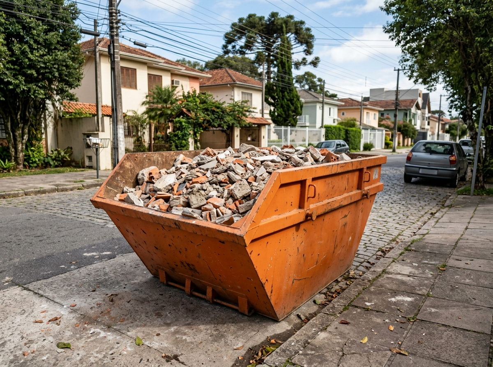
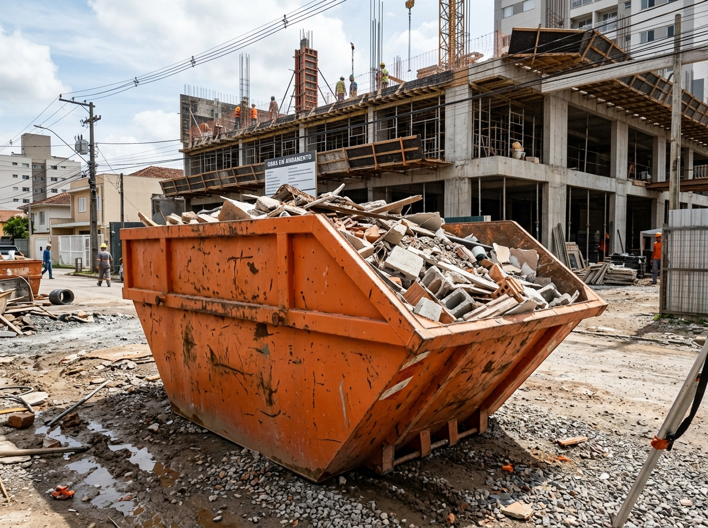
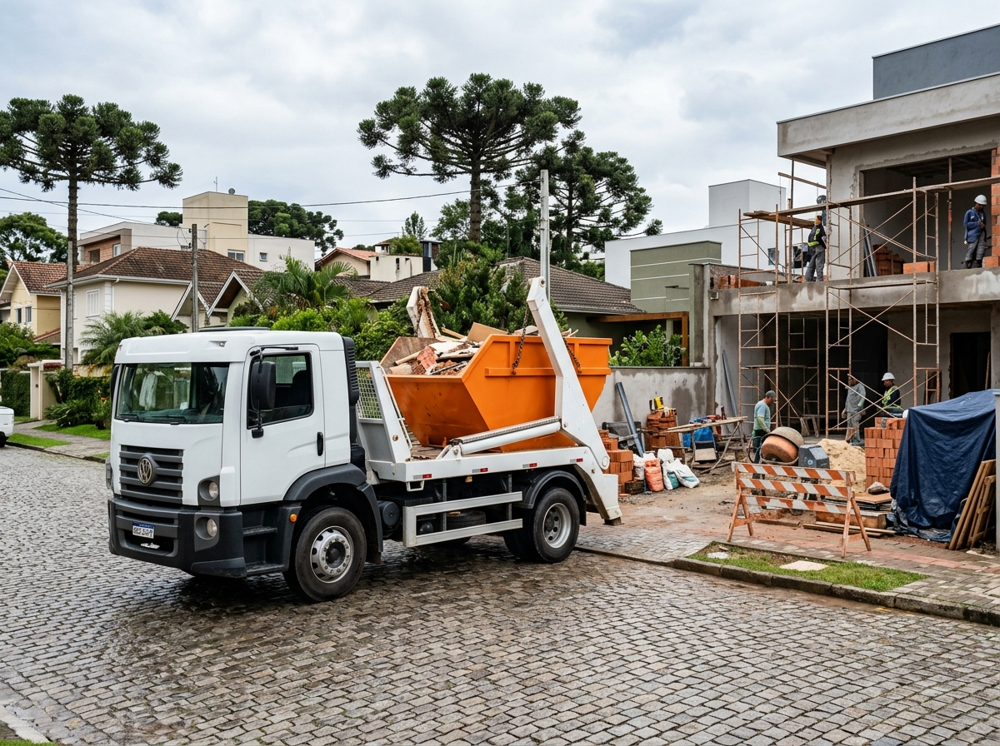
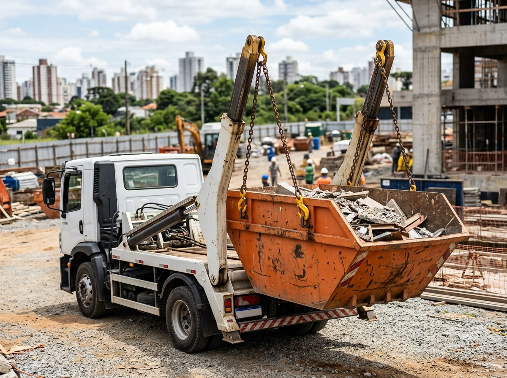

Todas as imagens pertencem à mesma direção fotográfica (luz natural de Curitiba/PR, mesma tinta laranja industrial, ângulo 3/4 na altura dos olhos, sem textos/marcas d'água).
Percepção de volume progressiva mantendo a mesma cor laranja e estilo fotográfico.

Reforma residencial leve. Caçamba mais baixa e compacta.
Arquivo: assets/cacamba-3m-pequena.png
Resolução: 1200 x 896 px | 1017.8 KB
Hash MD5: AD97F746...0801EA

Reforma residencial completa. Maior profundidade e volume interno.
Arquivo: assets/cacamba-5m-media.png
Resolução: 1200 x 896 px | 1051.1 KB
Hash MD5: E7571AD0...33EECD

Canteiro comercial/predial de grande porte. Alta capacidade.
Arquivo: assets/cacamba-7m-grande.png
Resolução: 1200 x 896 px | 1092.6 KB
Hash MD5: 76C07BC9...812857
Fotografias institucionais sem repetição para a Hero e a seção de Segurança/Legalidade.

Caminhão Volkswagen com caçamba laranja em rua de paralelo com araucárias.
Arquivo: assets/hero-main-visual.png
Resolução: 1200 x 896 px | 1056.0 KB
Hash MD5: ED44FBF9...087BD4C1

Foco de ação no içamento seguro da caçamba em canteiro de obra.
Arquivo: assets/operacao-caminhao-legalidade.png
Resolução: 1200 x 896 px | 957.0 KB
Hash MD5: 9C905711...78AE9E40